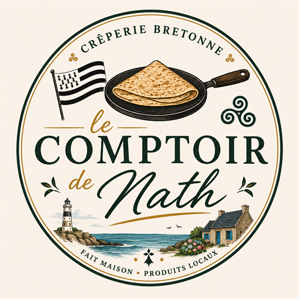

Aperçu — appuie sur Ctrl+P pour imprimer ou enregistrer en PDF (format A6)

Notre Carte
à découvrir
📱 Scannez le QR code
galettes · crêpes · gaufres
lecomptoirdenath.com/carte
Crêperie bretonne · Fait maison